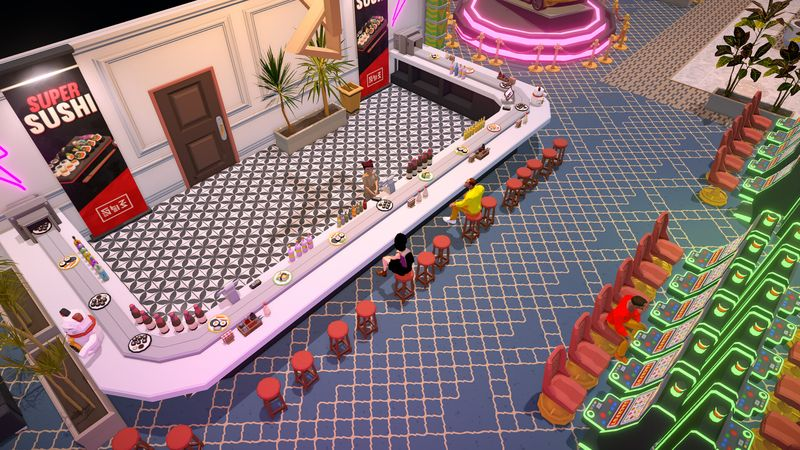
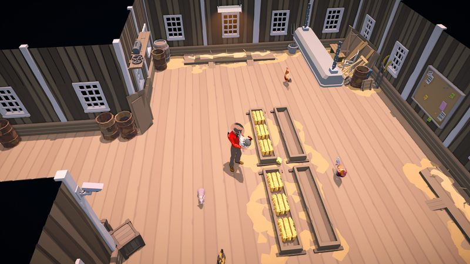

The Ranchers Multiplayer & Co-op Guide: Hosting, Roles, and Shared-Ranch Discipline

Hosting & joining: setup walkthrough
The Ranchers supports 1–4 player online co-op on one shared ranch. The structure follows the genre's standard host-and-join model; exact menu labels will be confirmed at Early Access launch, but the setup decisions below are the ones that matter regardless of what the buttons are called.
Before anyone hosts
- Pick the host deliberately. In host-based co-op, the world save lives with the host — progress happens on their ranch, and sessions typically require the host to be online. Choose the player with the most reliable connection, the most predictable schedule, and (ideally) the best hardware.
- Agree on session windows. Because progress is tied to the host's world, groups that don't schedule sessions drift apart in-game within a week. Two or three fixed evenings beat "whenever everyone's around."
- Decide the ranch's identity first. Crop-focused? Animal-heavy? A builder's paradise? Five minutes of alignment before the world is created saves a week of pulling in different directions.
Hosting the session
- The host creates or loads the shared world from the game's multiplayer menu.
- The host opens the session to friends — expect Steam friends-list invites or an invite option in the in-game menu; we'll document the exact flow at launch.
- Friends accept and spawn into the host's ranch. Up to four players total, host included.
Joining players should expect to work the host's ranch rather than import their own — treat your character's labor as your contribution, and the shared treasury as everyone's.
Role splits for 1–4 players
The number one co-op failure mode in farming games isn't conflict — it's duplication: two players watering the same field while the animals go unfed. The fix is zones of ownership. Each player owns a domain end-to-end; within an in-game week, nobody touches someone else's domain without asking.
Solo (1 player)
Everything is yours, so sequencing replaces splitting: crops in the morning, town and selling midday, planning and light chores in the evening. Our beginner's guide roadmap is built exactly for this.
Duo (2 players)
- Player 1 — Fields: tilling, planting, watering, harvesting, seed purchasing. Owns the crop calendar.
- Player 2 — Everything else: animals, selling runs, shopping, quests, building. Effectively the ranch's operations manager.
Trio (3 players)
- Fields lead: the entire crop pipeline.
- Barn lead: all livestock — feeding, collecting, care, housing repairs, feed stockpiling.
- Road lead: selling, buying, quests, fishing/mining for filler income, scouting prices.
Full crew (4 players)
- Fields lead: crops, sized to the crew's combined watering capacity (which is much larger — scale up boldly).
- Barn lead: livestock end-to-end. Owns the feed budget.
- Builder: construction, upgrades, layout, storage logistics. The force multiplier — a well-placed building saves the whole crew time every day.
- Quartermaster: sells everything, tracks prices, manages the shared wallet, pre-buys next season's seeds, and approves all large purchases. The least glamorous and most important role.

Rotate roles between in-game weeks if anyone gets restless — but within a week, stable ownership beats flexibility every time.
Daily timetables for every crew size
A shared day structure prevents the two classic co-op leaks: morning chaos (everyone asks "what should I do?") and evening waste (everyone logs off with energy unspent). Here's the 4-player template; smaller crews simply merge columns:
| Time of day | Fields | Barn | Builder | Quartermaster |
|---|---|---|---|---|
| Morning | Water & harvest everything | Feed & collect products | Continue current project | Check prices; plan the sales route |
| Midday | Replant; till new plots | Animal care; repair housing | Gather building materials | Selling run to town; request board |
| Evening | Everyone converges on tomorrow's bottleneck — usually unwatered fields, an unfinished building, or an unstocked feed store | |||
The evening convergence is the highest-leverage habit in co-op play. Ten coordinated minutes at day's end routinely saves an entire in-game day of stalled progress.
Shared-resource rules that prevent co-op chaos
- One wallet, one spender. All sales revenue is shared; only the quartermaster makes purchases above an agreed threshold. Duplicate machine purchases are the classic co-op money bonfire.
- Chests have purposes, not owners. Label storage by function — seeds, harvest-to-sell, building materials, animal feed — and everyone returns items to their labeled home. Twenty seconds of discipline, zero lost items.
- Never harvest someone else's ready crop without a word — not out of greed, but because the fields lead may be timing a sale or a quest turn-in.
- Feed stock is sacred. The barn lead sets a minimum feed reserve; dipping below it is a crew-level emergency announced immediately.
- Plan seasons together. Before day one of each season, the crew agrees the crop plan using the crop database and profit calculator. Unguided individual planting is how you end up with four seasons of the wrong crop.
- Log off deliberately. End sessions with tomorrow's plan stated out loud: what's planted, what needs water, what's being built, what's being sold.
Troubleshooting: lag, saves, permissions
These are the co-op problems that hit every farming-sim community in week one, with the standard fixes. We'll document The Ranchers' specifics at launch:
- Rubber-banding or delayed actions: usually host-side upload bandwidth. The host should close background downloads/streaming, and the player with the best upload should host. Wired beats Wi-Fi for the host in particular.
- A friend can't join: verify the session is actually open, both players run the same game version (Early Access patches land fast — update together), and restart the session invite rather than the whole game first.
- Progress seems lost: in host-based co-op, the world state lives in the host's save. If the host loads an older save or a different world, "missing" progress isn't missing — it's in another file. Hosts: back up saves before big sessions, especially around Early Access patches.
- Permission disputes (who can build/sell): expect host-controlled permission options for visitors, common in the genre; if The Ranchers ships them, set them before the first session, not after the first argument. We'll list exact options at launch.
- Desync after long sessions: the universal fix is a periodic full rejoin — have guests drop and reconnect every few hours in marathon sessions.
Co-op FAQ
How many players does The Ranchers support?
1–4 players online, including the host, on one shared ranch. Solo play is fully supported — co-op is a multiplier, not a requirement.
Who should host our co-op world?
The player with the best upload bandwidth and the most reliable schedule — progress lives in the host's save, and sessions typically need the host online.
Do joining players keep their own ranch?
Expect the genre-standard model where friends join and work the host's ranch rather than importing their own. We'll confirm The Ranchers' exact behavior at Early Access launch.
How do we split work between 4 players?
Zones of ownership: a fields lead, a barn lead, a builder, and a quartermaster who controls the shared wallet. See the timetables above — and converge everyone on tomorrow's bottleneck each evening.
Is there crossplay between PC and console?
The Ranchers is announced for PC and consoles, but crossplay details haven't been confirmed pre-launch. We'll update this answer the moment official information lands.
What's the biggest co-op mistake to avoid?
Duplicated spending and duplicated chores. One quartermaster approves big purchases, and every domain has exactly one owner per in-game week.
Related guides
- Beginner's Guide — the solo fundamentals co-op builds on.
- Money-Making Guide — how co-op changes the ranch economy.
- Crop Database — plan the crew's season together.
- Profit Calculator — agree on money-makers with shared numbers.